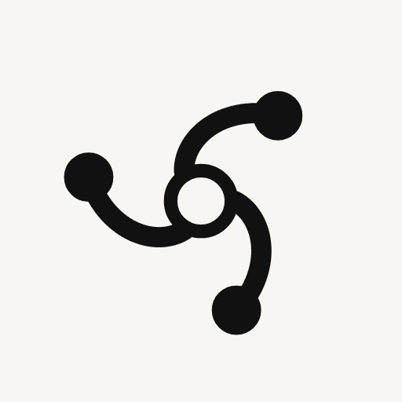
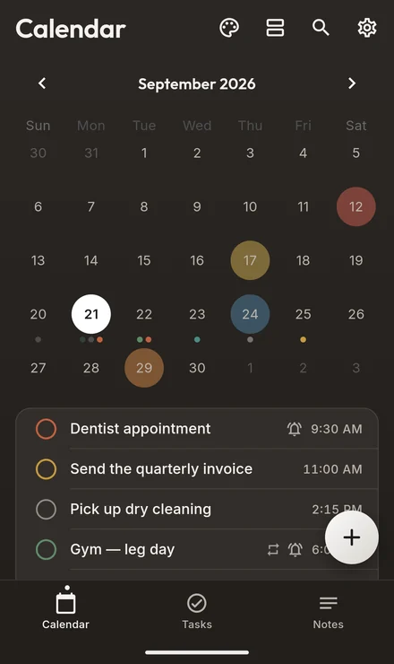
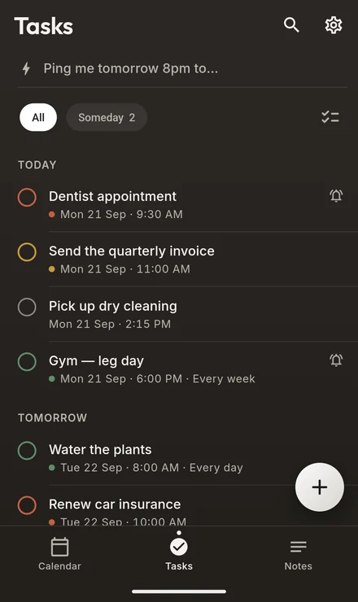
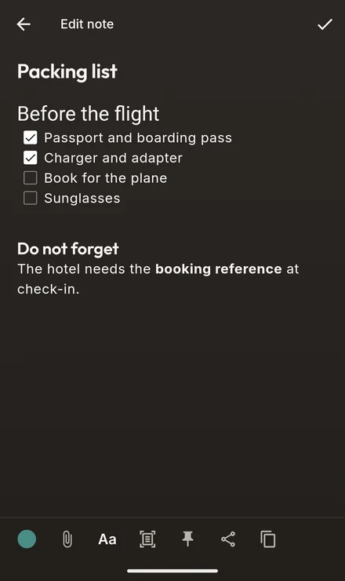
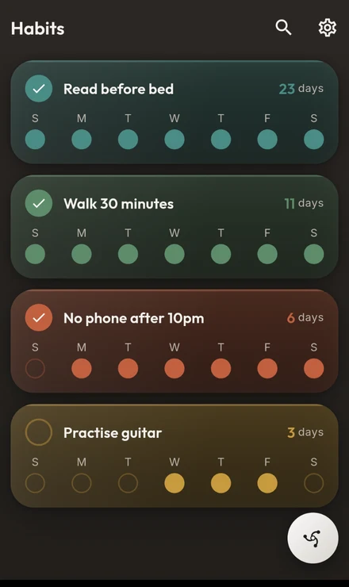
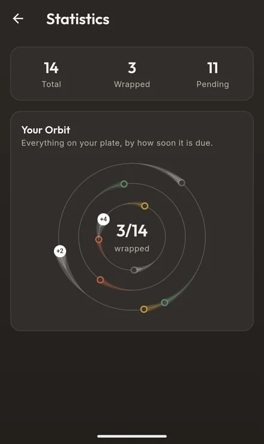
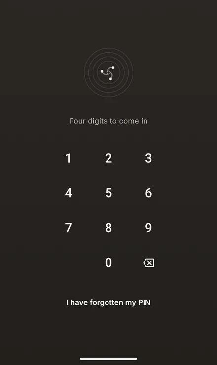

Orbit
Android · FreeA calendar, tasks, notes and habits — circling one centre.






rdotbytes builds apps and games for Android. No accounts to make, no servers to trust, nothing sent anywhere. What you write stays on the phone you wrote it on.
Nothing to sign up for and no email to hand over. Install it, open it, start using it.
There is nowhere for your data to go. It is written to your phone and it stays there.
No analytics, no advertising, no third-party kits counting what you tap.
The work

A calendar, tasks, notes and habits — circling one centre.






What's next